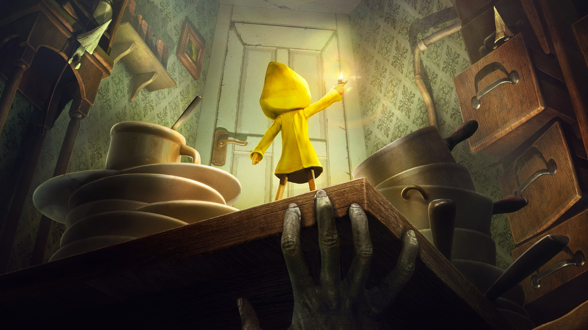
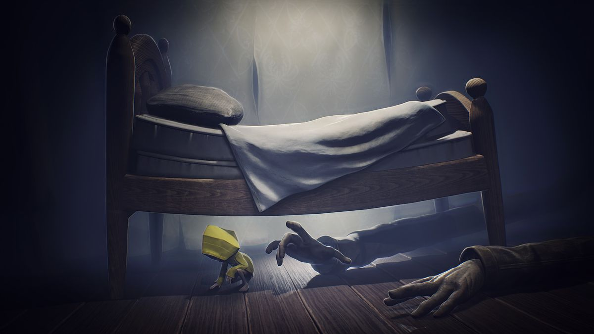
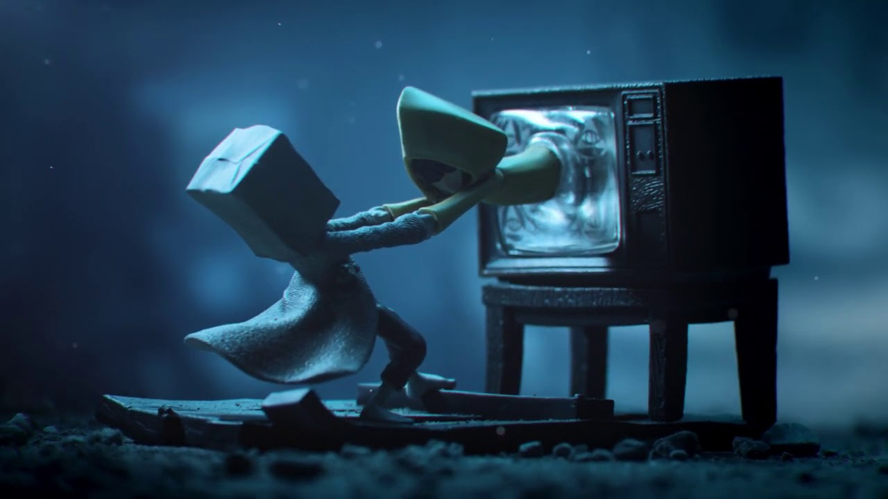

Start
StartLittle Nightmares 1&2

Little Nightmares Little Nightmares takes place in a 2.5D world.
The player traverses the world through various platformer elements,
occasionally being blocked by puzzles that must be solved to proceed.
The player is generally helpless due to the lack of any combat abilities
and must rely on stealth and the environment to hide from the various enemies.
the player is maybe given tools that even the odds slightly and allow them to fight back.

Little Nightmares 1
is a puzzle-platform horror adventure in a mysterious world,
Little Nightmares follows the journey of a little girl called Six.
a hungry little girl who must escape the Maw, an iron vessel inhabited by monstrous, twisted beings.
The game received positive reviews upon release with critics praising its atmosphere, graphics, and its sound

Little Nightmares 2
is a suspense adventure game in which you play as Mono,
a young boy trapped in a worldthat has been distorted by an evil transmission.
Together with new friend Six,the girl in the yellow raincoat, as his guide,
Mono sets out to discover the dark secrets of The Signal Tower.Their journey won't be easy.
Mono and Six will face a host of new threats from the terrible residents of this world
they set out to discover the source of the Transmission.

this game is available on
-
Nintendo Switch
pc
playstation
xbox